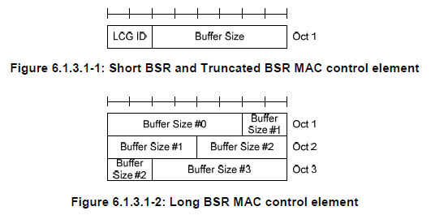
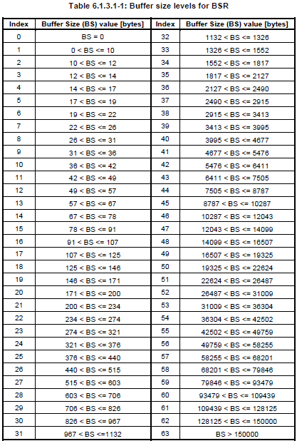

|
LTE Quick Reference Go Back To Index Home : www.sharetechnote.com |
|
|
BSR(Buffer Status Report)
BSR is a kind of MAC CE from UE to Network carrying the information on how much data is in UE buffer to be sent out. Putting it another way, it is a kind of MAC layer message from UE to Network (eNodeB) saying "I have something to transmit, would you give me a Grant to send this data ?" (For the details, refer to TS 36.321 5.4.5 Buffer Status Reporting. Also refer to the MAC PDU anaysis examples in MAC_LTE)
There are several types of BSR and we can classify these in terms of data structure and BSR timing.
In terms of data structure of BSR, there are two types. One is Short BSR and the other is Long BSR. The structure is as follows. With short BSR, UE can inform the amount of data in UL buffer only for one specific LCG (Logical Channel Group). That's why you see 'LCG ID' field at the beginning of Short BSR. With long BSR, UE can inform the UL buffer information for all LCG. That's why you don't see any specifc LCG ID field in Long BSR but you have multiple 'Buffer Size' field, each of which represent one LCG.
 Buffer Size #0 is BSR index for LCG 0 Buffer Size #1 is BSR index for LCG 1 Buffer Size #2 is BSR index for LCG 2 Buffer Size #3 is BSR index for LCG 3
One thing you would notice here would be that regardless of Long BSR or Short BSR, 'Buffer Size' bit field size is always 6 which means it can represent only 0~63.
How this small set of numbers can represent such a wider range of possible data size in UL buffer ? Good Question.
It would require too many bits to represent real data size in UL buffer, so they break down the data size into 64 different ranges and put an index to each of the ranges as shown in the following table from TS 36.321. The 'Buffer Size' field in BSR represent the 'Index' value of the following table.

Note : As you see, BSR index (value) 0 means "I have no data to transmit" and as the number gets larger, it means UE has more data to transmit.
There are three BRS types according to the timing UE send BSR. Regular BSR, Periodic BSR, Padding BSR are these. Regular BSR is sent when a New data arrives in UL buffer and the new data has higher priority than the one already waiting in the buffer. Periodic BSR is sent with the predefined periodicity. The periodicity is defined by Network and get informed to UE by RRC message (e.g, radioResourceConfigDedicated IE in RRC Connection Reconfiguration) as follows.
| +-mac-MainConfig ::= CHOICE [explicitValue] OPTIONAL:Exist | | +-explicitValue ::= SEQUENCE [111] | | +-ul-SCH-Config ::= SEQUENCE [11] OPTIONAL:Exist | | | +-maxHARQ-Tx ::= ENUMERATED [n5] OPTIONAL:Exist | | | +-periodicBSR-Timer ::= ENUMERATED [sf20] OPTIONAL:Exist | | | +-retxBSR-Timer ::= ENUMERATED [sf320] | | | +-ttiBundling ::= BOOLEAN [FALSE] | | +-drx-Config ::= CHOICE [release] OPTIONAL:Exist | | | +-release ::= NULL | | +-timeAlignmentTimerDedicated ::= ENUMERATED [infinity] | | +-phr-Config ::= CHOICE [setup] OPTIONAL:Exist | | +-setup ::= SEQUENCE | | +-periodicPHR-Timer ::= ENUMERATED [sf500] | | +-prohibitPHR-Timer ::= ENUMERATED [sf200] | | +-dl-PathlossChange ::= ENUMERATED [dB3]
Padding BSR is sent when the number of padding bits in a data message is larger than the size of BSR, so that the padding bit space can be used to send the BSR.
< Triggers for BSR transmission >
There are several cases where UE transmit BSR. Brief summary of each of these cases (Triggers).
i) UE has UL data to transmit : When UE has some data to transmit in RLC or PDCP entity for a certain LCG. (This is called Regular BSR) ii) UE got the UL Grant and the padding data is larger than the size of BSR CE and the subheader (This is called Padding BSR). There are somes cases where network send UL Grant when UE does not have any data to transmit, in this case UE transmit all 00 data or some garbage data and long padding 0s. In this situation, UE would put BSR MAC CE as part of MAC PDU and set BSR index value all 0. See one example here. iii) retxBSR-Timer is expired and UE has some data to transmit (This BSR is called Regular BSR) iv) periodicBSR-Timer is expired (This BSR is called Periodic BSR)
< When to send Long BSR and When to send Short BSR >
This is pretty tricky quesiton... for the details you have to refer to "5.4.5 Buffer Status Reporting" of 36.321. But unless you try to do implement this process on your own (programming MAC protocol stack) or analyze a lot of live network log line by line, it would not be easy to make very clear sense out of just reading the specification. However, just big picture is as follows : First criteria is to check whether it is Padding BSR or Regular/Periodic BSR and once it is determined, apply following rule.
For Regular and Periodic BSR, if( the number of LCG with allocated data > 1) --> Long BSR else --> Short BSR For Padding BSR, if( the number of padding bit >= the size of the Short BSR plus its subheader && the number of padding bit <= the size of the Long BSR plus its subheader) { if( the number of LCG with allocated data > 1) --> Truncated BSR else --> Short BSR } else { --> Long BSR }
|